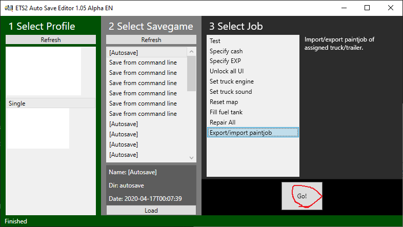

ETS2 Auto Save Editor - Applying a shared skin
Let's look into how to easily apply a skin shared by others into player's truck and trailer, by using ETS2ASE. First, please install ETS2ASE. You can check how to install the program here.
Let's do step by step
Preparing skin files uploaded by others, make sure in which folder the files are. extensions of the files are .paint0(truck) and .paint1(trailer). In general, both a truck skin and a trailer skin are shared at the time, you can find there are two files. However, two files may be distributed seperately.
Caution
Do not open skin files with other programs! Skin files are automatically read. So please do not modify them manually.Allocating trucks and trailers
This function works on trucks and trailers selected by players in-game If you do not have your own trucks or trailers, You cannot apply truck skins or trailer skins. Before applying, please open ETS2 and assign trucks or trailers to a player.Let's Launch ETS2ASE. As the picture below shows, you have to select a profile and a save file first, and then click 'Export/Import paintjob' beneath 'Select Job'. last, click 'Go!' button.
When you press
Then, choose either a truck skin or trailer skin. In the list, you can see 4 functions. What you should
do is to select
Copyright ⓒA 2020. All rights reserved.
Translated to English by 1922. Thank you.